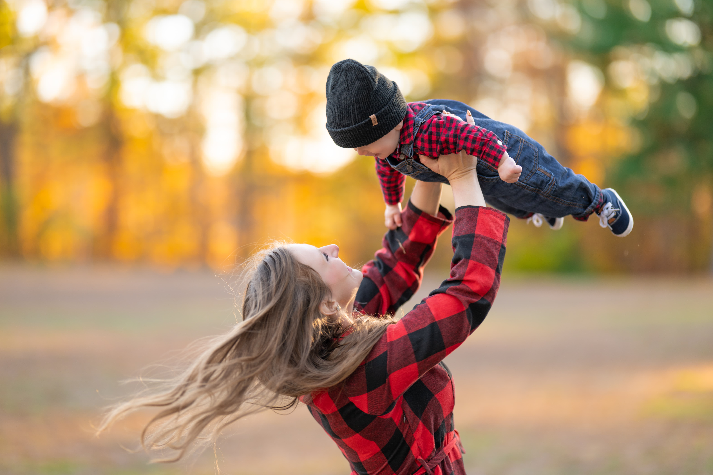
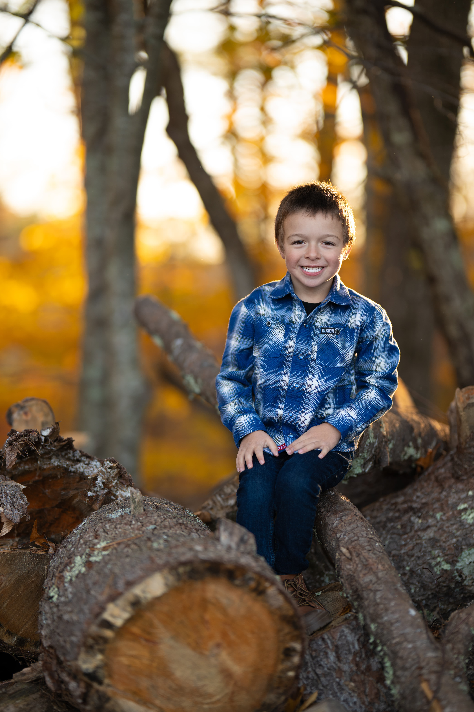
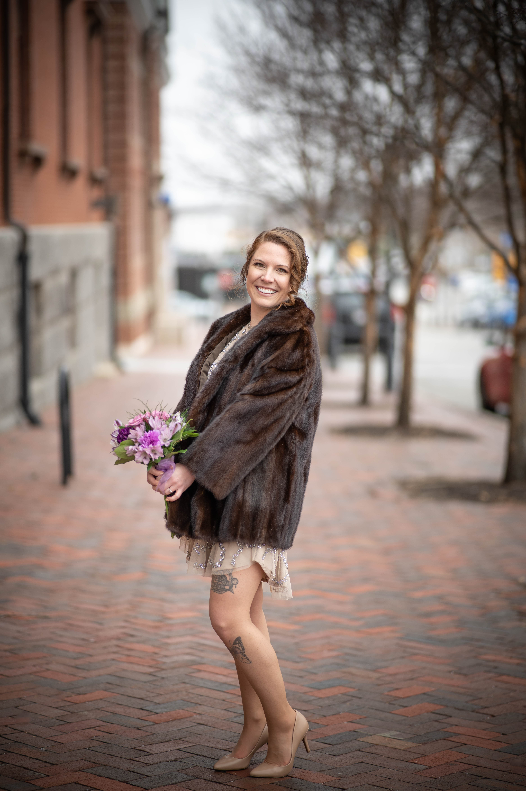
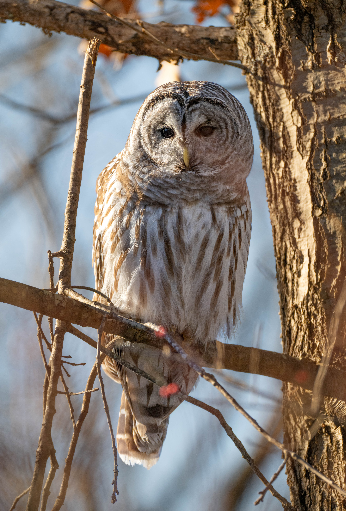
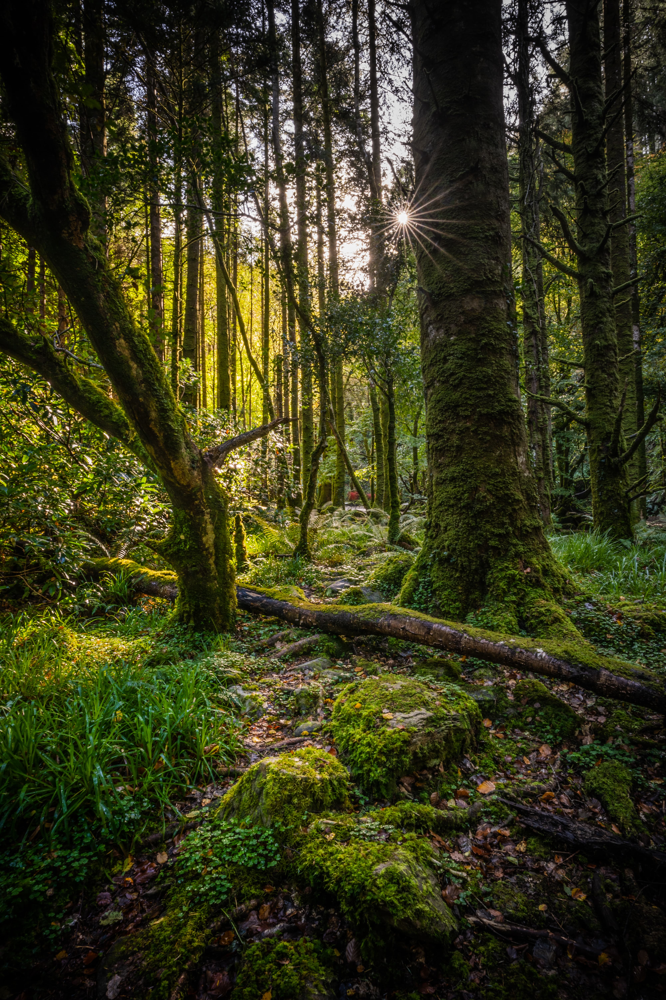

Wildlife.
Portraiture.
Landscape.
Audubon-featured wildlife and natural-light portrait photographer capturing real people, wild creatures, and breathtaking scenery. From the quiet natural beauty of New England’s forests to the genuine expressions shared between families, my work is rooted in authenticity, connection, and the natural world.

Featured Work
A glimpse into some recent work captured on location.




Sessions & Prints
From heirloom-level family portraits sessions to stunning fine-art wildlife and landscape prints. Lets work together to create imagery with depth, detail, and an eye for the extraordinary.